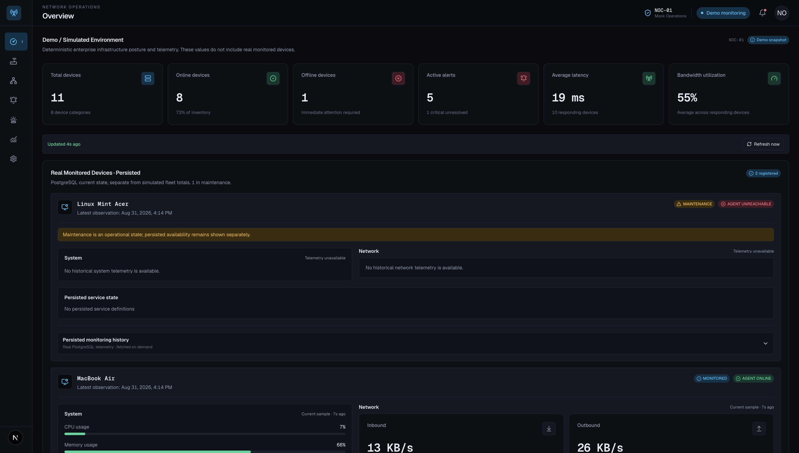

Featured

Primary featured project
NOC Monitoring Platform
Full-stack network and infrastructure monitoring with a Next.js dashboard, FastAPI/Python services, an independent collector, PostgreSQL persistence, persistent alerts, historical monitoring, and coverage-aware reliability analytics.
Public demo: deterministic simulated enterprise infrastructure with private persisted monitoring intentionally disabled.
Private lab: real host, network, and configured HTTP/TCP service telemetry with agents, persistence, historical observations, alert lifecycle, and analytics.
Next.jsTypeScriptFastAPIPythonPostgreSQL